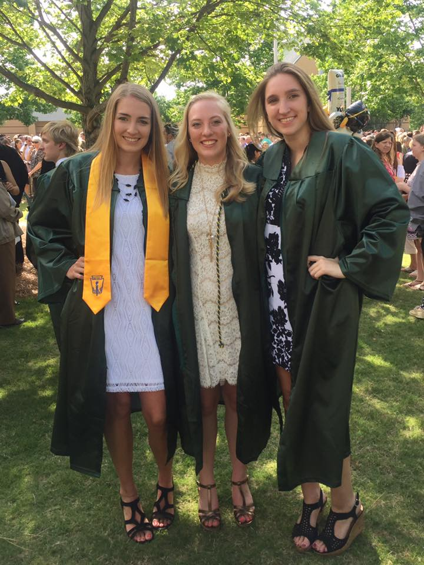

I grew up in Milton, Georgia, where I attended Blessed Trinity Catholic High School.
In high school I was involved in many different actvities. I played Varsity basketball
for all four years of high school. I was also involved in many different clubs including
enviromental club and FCA. Because I went to a Catholic high school, I was required to
perform community service hours every year. I volunteered for many organizations including
a soup kitchen and a 5k Cancer run. In high school I prided myself on making good grades.
Here is a year by year breakdown of my GPA.

This is a picture of me at graduation with some friends, I am on the left -->
While I was a senior in high school and applying to colleges, I knew that UGA was a
top condtender when it came to what college I wanted to attend. I applied to many
different colleges all over the country, from California to Washington DC. However,
when I received my acceptance letter from UGA I knew I had to go there. Now my Freshman
year is almost over, and I have had an amazing freshman experience. I got to meet
many new people and got involed with organizations that I love!
One of my favorite activities that I have gotten involved in is my sorority,
Delta Zeta. Through getting involved in Delta Zeta I have met life long friends.
Also, I am able to do philanthropy work for children who are hard of hearing.
We raise money for these children by putting on events such as Wing Bash and Bite
of Athens. Another thing that I have gotten involved in is intramural sports. I
played on two intramural basketball teams where I had a lot of fun and now I am
playing on an intramural softball team. Being involved in so many things on campus
has helped me build quite a large
resume!
Which is one of your favorite ways to get involved?